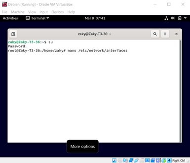
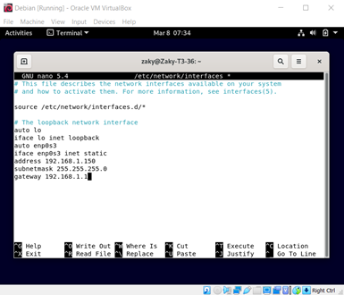
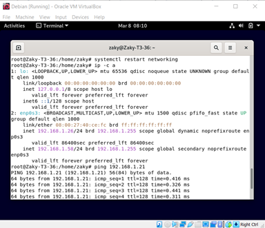
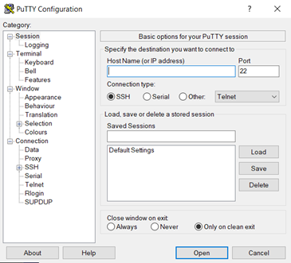
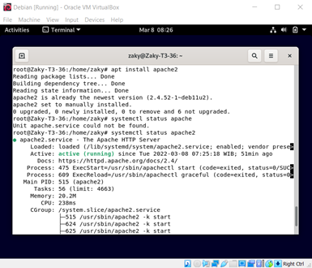

Menambahkan Network
1. Pertama, gunakan command su lalu masukkan password root untuk membuka root. Lalu buka nano /etc/network/interfaces

2. Lalu tambahkan ip address milik kita sendiri dengan
auto enp0s3
iface enp0s3 inet static
address 192.168.1.150
subnet 255.255.255.0
gateway 192.168.1.1

3. Update network kita dengan command systemctl restart networking lalu cek ip kita dengan ip -c a

4. Instal PuTTy untuk memudahkan kita dalam mengontrol server kita di jarak jauh https://www.putty.org

5. Lalu instal apache dengan command apt install apache2 dan cek statusya dengan systemctl status apace2
